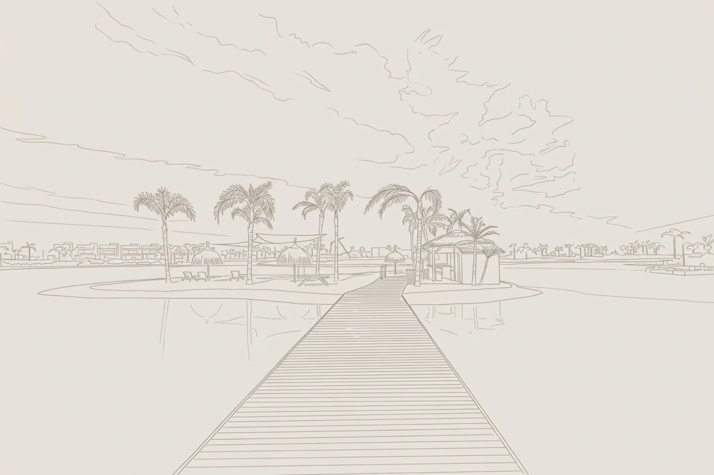

ALMENDRO
ALMENDRO
Santa Rosalía · Costa Cálida
01 · IS
Íslenska
Velkomin í sólina
Halda áfram á íslensku
02 · EN
English
Welcome to the sun
Continue in English
03 · ES
Español
Bienvenidos al sol
Continuar en español